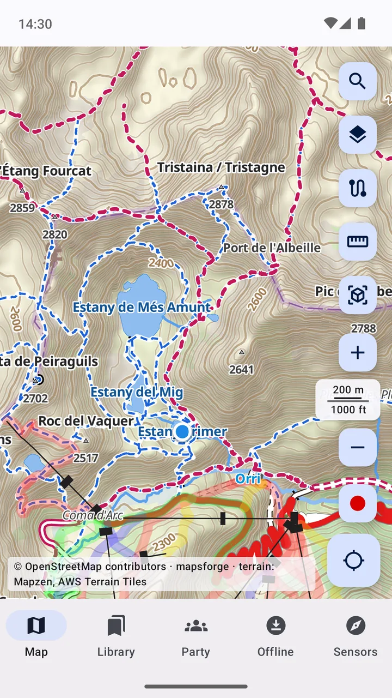
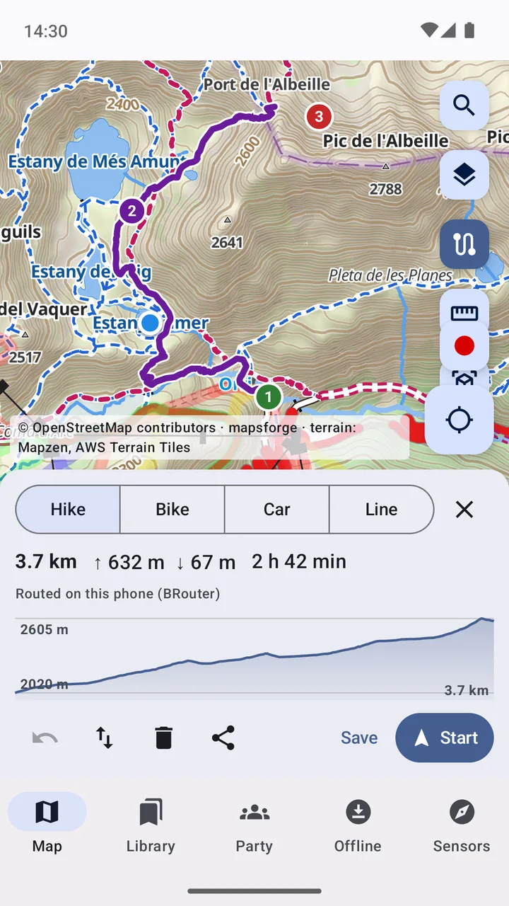
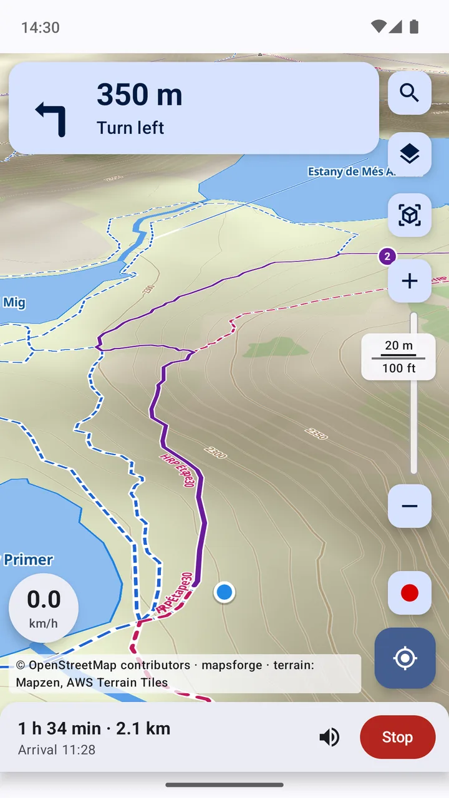
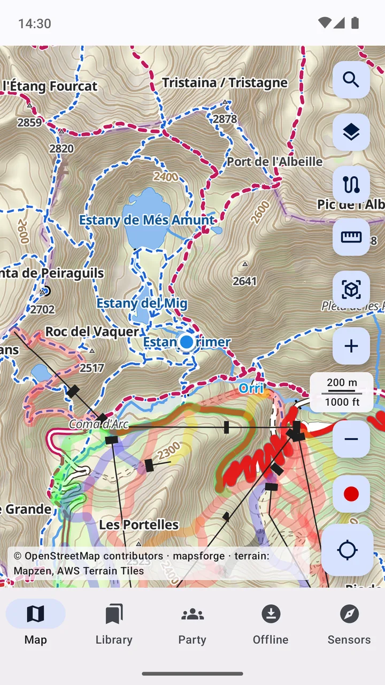
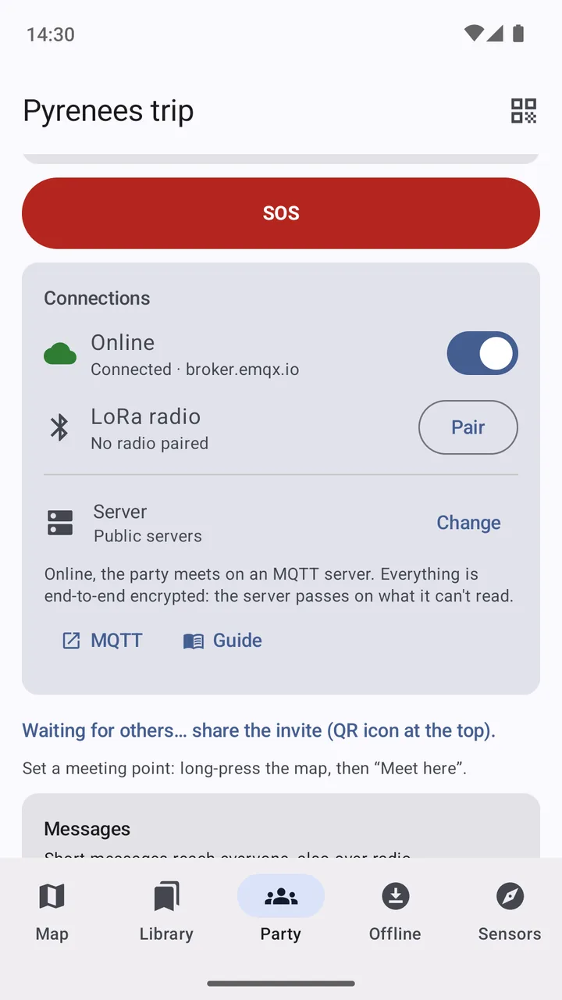
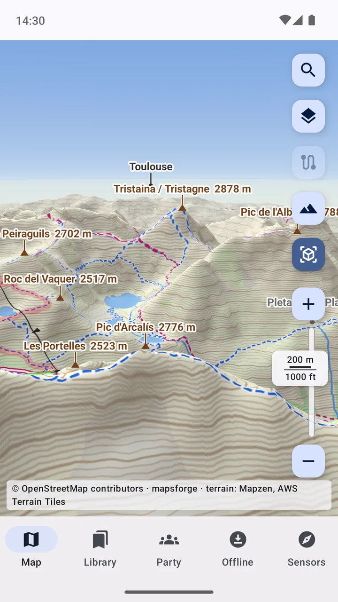
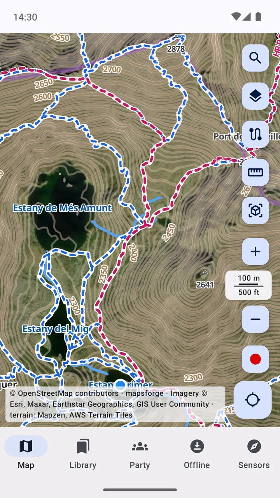
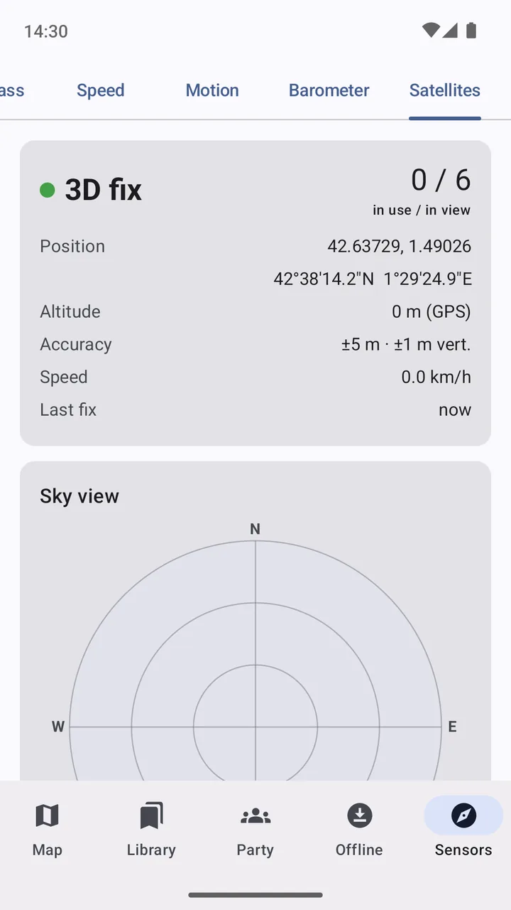

מפות שממשיכות לעבוד גם בלי קליטה.
מורידים את המפה של כל מדינה, מתכננים מסלול והולכים בו פנייה אחר פנייה בלי קליטה, ורואים איפה כל אחד מהקבוצה נמצא, גם מחוץ לכיסוי הסלולרי, דרך מכשירי קשר LoRa.
- עובדת אופליין
- בלי חשבון, פרסומות או מעקב
- קוד פתוח (GPL-3.0)
- בעברית וב־English



מתכננים את הטיול. ואז פשוט הולכים בו.
כמה הקשות על המפה, ו־MapAround מוצאת את הדרך בשבילים ובדרכים, בטלפון עצמו כשנתוני הניתוב הורדו.
- פרופילים להליכה, לאופניים ולרכב, או קווים ישרים למדידה
- מרחק, טיפוס, זמן משוער ופרופיל גובה
- ניווט פנייה אחר פנייה עם הנחיות קוליות, גם כשהמסך כבוי
- מסלול חדש כשיוצאים מהמסלול, ו־Android Auto ברכב


יודעים איפה כולם, גם בלי קליטה.
יוצרים קבוצה ומזמינים את כולם עם קוד QR. כל אחד מופיע על המפה עם סמל וצבע משלו, דרך האינטרנט או דרך מכשירי קשר LoRa של Meshtastic שמחוברים בבלוטות׳.
- טלפון שיש לו גם אינטרנט וגם מכשיר קשר מעביר את ההודעות בין השניים
- התרעות SOS, נקודת מפגש והודעות קצרות
- הצפנה מקצה לקצה: רק הקבוצה שלכם יכולה לקרוא


קוראים את השטח לפני שמגיעים אליו.
מפות OpenStreetMap חינמיות של כל מדינה בסגנון טופוגרפי מפורט, עם קווי גובה, הצללת תבליט ושבילי ההליכה המסומנים בצבעים שלהם.
- הקשה על פסגה, בקתה או מעיין: מה זה, הערך בוויקיפדיה ותמונות שצולמו בסביבה
- מקרא לכל מפה, שנוצר מהסגנון עצמו
- תצוגת תלת־ממד עם תבליט השטח והמבנים
- צילומי לוויין מתחת לשבילים ולשמות של המפה האופליין
- מפות לאומיות (swisstopo, IGN, Kartverket, USGS ועוד) ושרתי אריחים משלכם
- גיליונות טופוגרפיים סרוקים ומאגרי אריחים: MBTiles, SQLiteDB, TwoNav .rmap

כל המכשירים, בלי לסחוב אותם.
הכול עובד מהחיישנים של הטלפון ומנתוני השטח שעליו.
- אזימוט ומרחק, קו ראייה ושדה ראייה
- תכנון קישור רדיו: אזור פרנל והנחתת מסלול ל־LoRa, VHF, PMR446 ועוד
- קואורדינטות ב־DMS, UTM, MGRS, רשת ישראל החדשה (ITM), Plus Codes ו־Maidenhead
- מצפן עם צפון אמיתי, מד מהירות, ברומטר ומפת לווייני ה־GPS
- מד שיפוע ומד כוחות G לרכבי שטח
וגם הדברים הקטנים
תכונות קטנות שעושות את ההבדל בשביל.
הקלטת מסלול
מקליטים איפה הייתם עם ה־GPS, גם כשהמסך כבוי, ורואים מרחק וטיפוס.
המקומות שלכם
שומרים חניוני לילה, מעיינות, תצפיות וחניות עם הערה, ומוצאים אותם לפי המרחק.
ייבוא וייצוא GPX
מייבאים מסלולים, הקלטות ונקודות מאפליקציות אחרות, ומייצאים את שלכם.
חיפוש אופליין
יישובים, פסגות, מעיינות, רחובות ושבילים מתוך המפות שהורדו, בלי אינטרנט.
שיתוף נקודה
שולחים כל נקודה או מסלול כקישור או כקובץ GPX, ופותחים קישורים וקואורדינטות שאחרים שולחים.
בלי שירותי Google
MapAround לא תלויה בשירותי Google Play, ולכן היא עובדת גם בטלפונים בלי שירותי Google.
הטיולים שלכם נשארים שלכם.
המפות, ההקלטות והמקומות שלכם נשארים בטלפון. המפתח לא מפעיל שום שרת ולא מקבל שום מידע שלכם.
מדיניות הפרטיות (באנגלית) תמיכה ב־MapAround- בלי חשבון
- בלי פרסומות, בלי ניתוח שימוש ובלי מעקב
- נתוני הקבוצה מוצפנים מקצה לקצה
- קוד פתוח ברישיון GPL-3.0